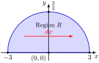

1.
Sketch the region of integration and evaluate the double integral:
\begin{equation*}
\int^{3/2}_0 \int^{\sqrt{9-4y^2}}_{-\sqrt{9-4y^2}} y \, dx \, dy.
\end{equation*}
Solution.
Step 1: Identify and Sketch the Region of Integration
The given bounds of integration describe a Type II region in Cartesian coordinates where:
\begin{equation*}
0 \leq y \leq \frac{3}{2} \quad \text{and} \quad -\sqrt{9-4y^2} \leq x \leq \sqrt{9-4y^2}.
\end{equation*}
Squaring the inner variable bounds reveals the equation of the perimeter curve:
\begin{equation*}
x = \pm\sqrt{9-4y^2} \implies x^2 = 9 - 4y^2 \implies x^2 + 4y^2 = 9 \implies \frac{x^2}{9} + \frac{y^2}{9/4} = 1.
\end{equation*}
This is an ellipse centered at the origin with a horizontal semi-axis of \(a=3\) and a vertical semi-axis of \(b=3/2\text{.}\) Because \(y \geq 0\text{,}\) the region \(R\) is the upper half-ellipse.

Step 2: Evaluate the Double Integral
We integrate the innermost expression with respect to \(x\text{,}\) treating \(y\) as a constant factor:
\begin{align*}
\int^{\sqrt{9-4y^2}}_{-\sqrt{9-4y^2}} y \, dx \amp = y \Big[ x \Big]_{-\sqrt{9-4y^2}}^{\sqrt{9-4y^2}} = y \left( \sqrt{9-4y^2} - \left(-\sqrt{9-4y^2}\right) \right)\\
\amp = 2y\sqrt{9-4y^2}.
\end{align*}
Now substitute this into the outer variable layer and integrate with respect to \(y\text{:}\)
\begin{equation*}
\int^{3/2}_0 2y\sqrt{9-4y^2} \, dy.
\end{equation*}
We solve this using a simple \(u\)-substitution. Let:
\begin{equation*}
u = 9 - 4y^2 \implies du = -8y \, dy \implies -\frac{1}{4}\,du = 2y \, dy.
\end{equation*}
Updating limits of integration: when \(y = 0 \implies u = 9\text{,}\) and when \(y = \frac{3}{2} \implies u = 9 - 4\left(\frac{9}{4}\right) = 0\text{.}\)
\begin{align*}
\int_{9}^{0} -\frac{1}{4}u^{1/2} \, du \amp = \frac{1}{4} \int_{0}^{9} u^{1/2} \, du = \frac{1}{4} \left[ \frac{2}{3}u^{3/2} \right]_{0}^{9}\\
\amp = \frac{1}{6} \left( 9^{3/2} - 0 \right) = \frac{1}{6}(27) = \frac{9}{2}.
\end{align*}
The value of the upper half-ellipse integral is exactly \(\frac{9}{2}\text{.}\)